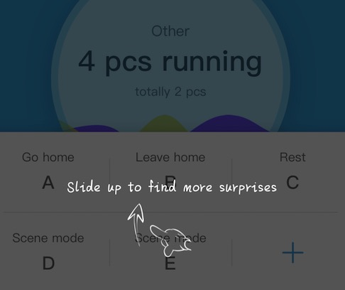

概述
MkDocs 是一个用于创建项目文档的 快速, 简单 , 完美华丽 的静态站点生成器. 文档源码使用 Markdown 来撰写, 用一个 YAML 文件作为配置文档。
特点
- 任意托管，构建完全的静态 HTML 站点 , 可以将它托管到 GitHub pages, Amazon S3 等任意地方。
- 大量主题，默认包含大量美观的主题. 可以从 bootstrap, readthedocs 和 12 款 bootswatch 主题中选择。
- 即时预览，内建的开发服务器使你在撰写文档的时候就即时预览. 它甚至能在保存更改时自动载入, 只需刷新浏览器就可以查看更改。
- 易于配置，可以配置文档主题。
环境搭建
需要先安装python和python package manager pip。
安装mkdocs
执行pip install mkdocs
创建项目
执行mkdocs new project命令
执行后会创建一个配置文件 mkdocs.yml和一个包含文档源码的 docs 文件夹. 在 docs 文件夹里包含了一个名为 index.md 的文档.
MkDocs 包含了一个内建的服务器以预览当前文档. 输入 mkdocs serve 命令以启动内建服务器，默认:http://127.0.0.1:8000 可以在浏览器中预览效果。
添加页面, 执行
curl 'jaspervdj.be/lorem-markdownum/markdown.txt' > docs/about.md
页面具体内容在about.md实现，支持markdown语法。
执行mkdocs build生成文档，执行该命令时创建了一个site的文件夹，执行该命令后会对 Markdown 格式的文档进行转换，转换为 html文件。
发布
MkDocs 生成的文档只包含静态文件, 因此你可以将文档部署到任意地方。只需上传 site 目录到你需要发布的位置即可。
关于
学习使用mkDocs创建电子书。
图片
